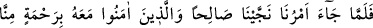
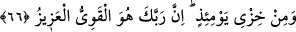

O bilmiyor ki bu küpün suyu, Hak ırmağı ile birleşmiştir
Sen de bir velînin beden devesine kul, köle kesil de
Sâlih Peygamberin rûhu ile kapı yoldaşı ol
66. Emrimiz gelince Salih’i ve onunla beraber îmân edenleri, bizden bir rahmet
olarak (azabdan) ve o günün zilletinden kurtardık. Şüphesiz Rabb’in güçlüdür, (her
şeye) galiptir.
“Emrimiz gelince” onların azâba dûçar olacakları hakkındaki fermanımız geldiği
vakit neticede “Salih’i ve onunla beraber îmân edenleri” yani Salih’in inandığı gibi
inanan ve bu konuda ona uyanları kurtardık.
Burada onların inanma vakitlerinin Salih (a.s.)’inki ile aynı olduğu kastedilmiyor.
Çünkü bir peygamberin îmânı, kendisine tâbi olan müminlerinkinden öncedir.
“bizden bir rahmet” lütuf “olarak” yani sırf bizden büyük bir rahmet olarak
kurtardık. Yoksa kendi amelleri sayesinde değil. Nitekim ehl-i sünnetin görüşü bu
yöndedir.
et-Te’vîlâtü’n-Necmiyye’de şöyle denilir: “Bu (rahmet), kurtulmaya vesile olacak
amelleri yapmaya muvaffak kılmak demektir.” el-İrşad’da ise şöyle denilir: “Bu
(rahmet), Salih (a.s.)’a göre peygamberlik, mü’minlere göre îmân demektir.
“ve o günün zilletinden” o gün ayakları kayıp rezil olmaktan ve değersiz ve küçük
düşmekten “kurtardık.” Allah’ın gazap ve intikamı ile helak edilenlerin zilletinden
daha büyük bir zillet yoktur.
Şeyhzâde der ki: Allah Teâlâ’nın inananları neden kurtardığını beyan etmek için
‘kurtardık’ cümlesi tekrarlanmıştır. Bu ise helak edilmektir. “O gün” emrimizin geldiği
gün mânâsındadır.
Mü’minlerin kurtulduğu şey; o gün başlarına gelecek olan ve kıyamet gününe kadar
utanç verici vasıflarla yad edilmelerine sebebiyet verecek ve kendilerinden hiç
ayrılmayacak olan zillet ve hor görülme de olabilir. Çünkü “el-hizy”, rezilliği aşikar
olan ve benzerlerini yapmaktan dolayı utanç duyulacak ayıp demektir.”
Ey Muhammed! “Şüphesiz Rabb’in güçlüdür” her şeye kadirdir, her şeye “galiptir.”
O’ndan başka galib yoktur.
Kâşifî der ki: “Şüphesiz Rabb’in güçlüdür” mü’minleri kurtarmaya kadir olan O’dur,
“galiptir.” Düşmanı helâk konusunda onlara galibdir.
Özellikle azâbın geldiğini bildirdiği sırada dostlarını kurtarıp kurtarmadığını haber
vermesi daha önemli olduğu içindir ki Allah Teâlâ önce dostlarını kurtardığından